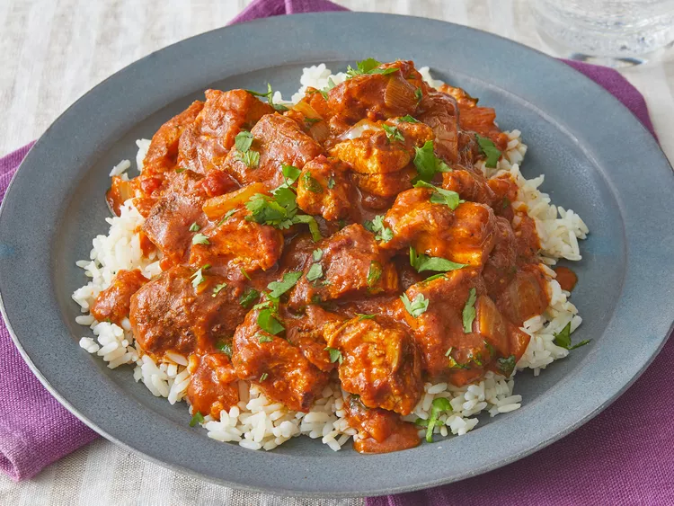

Chicken Butter Masala

Description
Chicken tikka masala made easy with this great-tasting recipe — simply marinate chicken breast
in yogurt and spices and then simmer in a tomato cream sauce. Serve with rice or warm pita bread.
I have really high standards when it comes to my favourites. And Butter Chicken tops the list. So it annoys me
when butter chicken is too sweet or too oily or just doesn't have a punch of flavour that makes you want to dive
into the sauce.
For a lot of people, making butter chicken at home might translate into long hours spent in the kitchen. That's
not true at all. This recipe takes a little under an hour from start to finish, and we are not using a ton of
butter or cream to give it that luxurious, creamy taste either. How? I'm going to show you.
Ingredients
- 1 cup yogurt
- 1 tablespoon lemon juice
- 4 teaspoons ground cumin, divided
- 3 boneless skinless chicken breasts, cut into bite-size pieces
- 2 teaspoons salt, divided, or more to taste
- 2 teaspoons freshly ground black pepper
- 1 clove garlic, minced
- 1 tablespoon butter
- 2 teaspoons paprika
- ¼ cup chopped fresh cilantro
Steps to prepare
- Combine yogurt, lemon juice, 2 teaspoons cumin, cinnamon, cayenne, black pepper, ginger, and 1 teaspoon
salt in
a large bowl.
- Overhead of Tikka Masala sauces being whisked together in a bowl.
- Stir in chicken, cover, and refrigerate for 1 hour.
- Cuts of chicken covered and marinating in a Tikka Masala mixture in a bowl.
- Preheat a grill for high heat.
- Lightly oil the grill grate. Thread chicken onto skewers, and discard marinade.
- Overhead of two raw chicken skewers sitting in a baking sheet.
- Grill until juices run clear, about 5 minutes on each side.
- Melt butter in a large heavy skillet over medium heat. Sauté garlic and jalapeño for 1 minute. Season with
remaining 2 teaspoons cumin, paprika, and remaining 1 teaspoon salt. Stir in tomato sauce and cream. Simmer
on low heat until sauce thickens, about 20 minutes.
- Add grilled chicken, and simmer for 10 minutes. Transfer to a serving platter, and garnish with fresh
cilantro.
- Serve over rice.